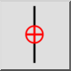

Ograniči okomito
Alatna traka / Ikona:


Izbornik: Hvatanje > Ograniči okomito
Prečac: E, V
Naredbe: restrictvertical | ev
Alatna traka / Ikona:


Ograničava pokazivač okomito na isti X-položaj kao i relativna nulta točka.